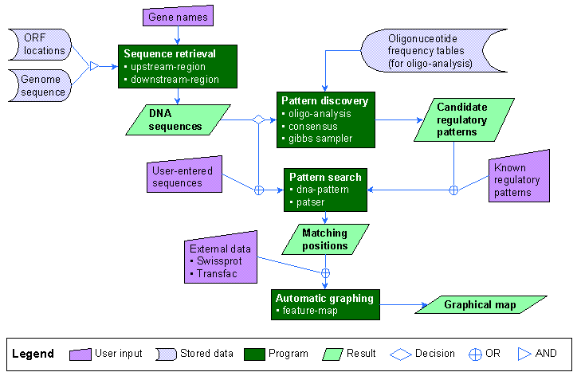

RSA-tools - Tutorials
The aim of this document is to present the Regulatory Sequence Analysis Tools (RSAT). The most convenient way to follow the tutorial is to dispay the current page in a separate window, and to follow the instructions on the current one.
The home page of RSAT displays two frame. The left frame contains a menu, presenting the tools available. Each time you click on a link in the left pannel, the right pannel shows you the form page for the corresponding tool. The tools are interconnected, allowing you to send automatically the result of one request as input for the next request. This is illustrated in the flow chart below.
We will use practical examples to get familiar with the different tools,and the way they are interconnected. The tutorial contains different parts, illustrating the typical situations one can face when analysing regulatory sequences :
- You know the regulatory motif (e.g. the consensus for a transcriptional factor), you know the genes: you look for the matching positions within the upstream regions from your genes (pattern matching);
- You know the regulatory motif, you ignore the genes : you look in the genome for all genes possibly regulated by your element (genome-scale pattern matching);
- You know the genes, you ignore the regulatory motif : you look for elements shared by a set of functionally related upstream sequences, which could reveal unknown regulatory sites (pattern discovery).
Tutorials
- Sequence retrieval
- Pattern matching
- dna-pattern string-based pattern matching
- Genome-scale pattern matching
- Pattern discovery
- String-based pattern discovery
- oligo-analysis Detection of over-represented words
- dyad-analysis Detection of over-represented pairs of words
- Matrix-based pattern discovery
- gibbs motif sampler (program developed by A.Neuwald))

For suggestions or information request, please contact : Jacques van Helden (jvanheld@ucmb.ulb.ac.be)